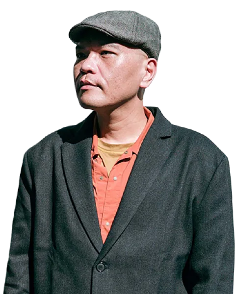
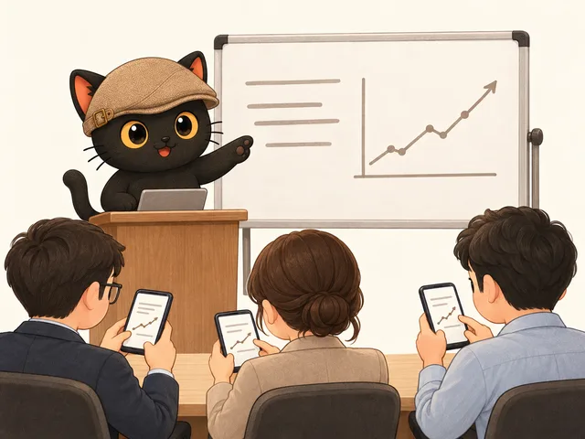
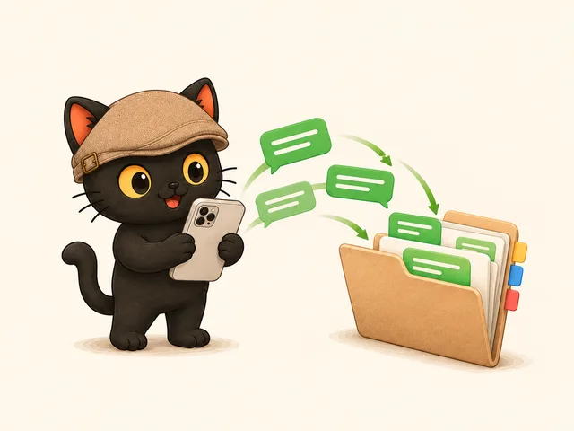
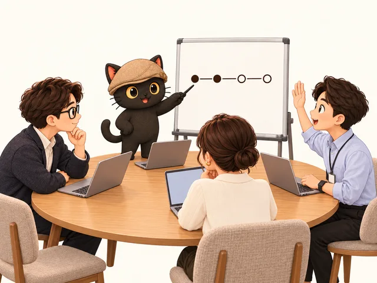

別再追著學工具。
把資料準備好，讓 AI 來學你。
我協助專業知識工作者，跟 5 到 10 人的小公司、團隊：
用寫文件跟分類資料夾，就能打造 AI 員工。
AI 懂你，才能幫你。

我每月固定舉辦兩場免費線上講座，
講座資訊請看我的 LINE 社群。
讓 AI 依照你的方式，幫你做事。
信件、行程、待辦、報帳都自己來，事情一多就漏掉。
整理資料、會議紀錄、內容初稿
掌握重點，也掌握進度
可依需求授權串接，重要安排由你確認。
協助專業人士

① AI 課程與工作坊 中小企業與政府專案培訓 看可以講什麼 ↓
② LINE 群組訊息整理 先把 LINE 裡的知識整理出來 看能做什麼 ↓
③ 企業陪跑 一個月，帶團隊培訓出自己的 AI 員工 看企業陪跑 ↓歡迎中小企業內訓、政府專案與公部門培訓邀約。各行各業都適用，基礎課用手機就能上。
課名點開看簡介。時薪是講師費、未稅，交通另計；公開課的報名費另列在課程頁。
做出風格穩定的社群圖卡，有你自己的品牌形象，不會跑掉。只做圖文，不含影片。
讓你有穩定的內容可以持續產出：靈感詞加標籤，不用每次從零想，AI 小編也懂你的語氣。
用 AI 做出放得下你專業內容的個人品牌網站。
用 AI 自動剪輯影片、自動上字幕。重點在剪輯流程，不教 AI 生成影片。
從每天做的一件事開始養：讓 AI 認識你，幫你整理信件、行程與待辦；也包含 LINE 群組報帳、對話整理。
Gmail、行事曆、LINE 群的進度每天幫你盯著；要不要串接帳號依程度與設備決定，重要安排由你確認。
用 Agent 串聯工具，叫 AI 去學、幫你操作其他工具，例如直接改 Google 簡報、PPT；AI 說做完了，還要學會追問有沒有做好。
高效率文案與簡報力，加上資訊視覺化與儀表板。
先刪再自動化：流程先簡化，再交給 AI，不讓瞎忙變快。
AI 任務多到管不過來時，找一位 AI 總管派工，再把權責講清楚。
先找關鍵主管做好一條流程再複製；帶新人時順便教 AI，給人看是新人手冊，給 AI 用是技能包。
在台灣，工作上的訊息幾乎都在 LINE 裡。LINE 裡的知識沒有先整理出來，很多工作流程很難推動。
LINE 群組對 AI 比較不友善，所以這是進階課程；要我幫你們整套建起來，屬於陪跑範圍，費用依方式而定，先聊再報。
我會跟你們一起培訓。學會了，之後的 AI 員工你們自己做得出來。
下面是我自己這一組，你們的版本照你們的工作來設計。
五位同時開工（示意）：遇到對外送出、錢、日期，停下來交回人
成品都放在你們自己的電腦與帳號裡，交接後隔一週你們自己重跑一次，跑得起來才算完成。
想邀課、整理 LINE 群組，或談企業陪跑，都在 LINE 官方帳號留言。政府專案的企劃與較大的合作案也接，先聊再談範圍。
聯繫我請洽 LINE 官方帳號